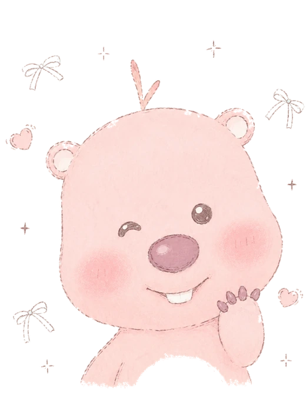
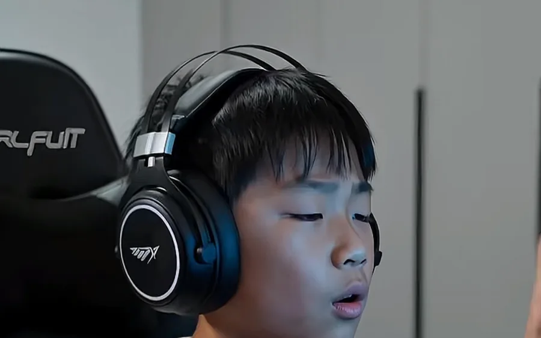
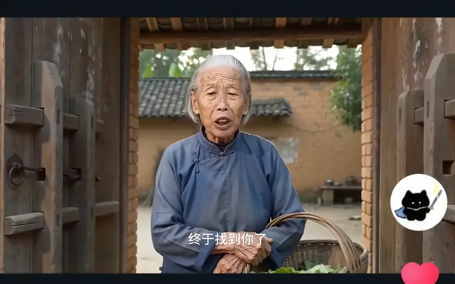
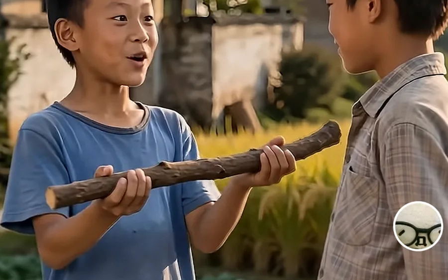
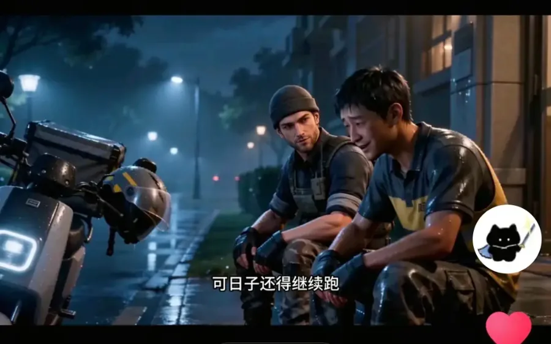

01CF × COMMENT194.1万播放
快来评论区分享最中二的战队名
把玩家共同记忆写进剧情，评论区形成大量真实战队名补充。

WELCOME TO
脚本、画面、AI 实验，以及一些还没来得及拍出来的怪点子。
MY LITTLE CREATIVE UNIVERSE
这里不是一份规规矩矩的作品集。更像一个可以随便翻的创作桌：有做完的片子、没做完的脑洞、AI 偶尔犯的错，以及我还在尝试理解的东西。
SELECTED WORKS
我更在意的不是“做过多少”，而是每个项目里我试图解决什么。
把玩家共同记忆写进剧情，评论区形成大量真实战队名补充。

02CF × NOSTALGIA101.87w播放从“爷爷家没有网”的小抱怨切入，把游戏记忆落到真实亲情。

03CF × MEMORY130.39w播放用现实老人承接经典角色记忆，把玩家熟悉的名字变成一次重逢。
用两个玩家群体的设备要求做对照，形成一眼能懂的圈层反差梗。

05CF × CHILDHOOD54.39w播放把木棍想象成“屠龙”，用极低理解门槛连接游戏与童年记忆。

06COMMENT × STORY33.8万播放从玩家评论出发扩写人物关系，让社区记忆成为故事入口。
把当下人物和网络热梗放进古装宫斗语境，用强烈身份错位制造连续剧情笑点。
DIRECTOR'S CASE FILE
从观众刷到它的样子，一路拆回创意、剧本和数据。
IDEA DRAWER
有些点子最后会变成视频，有些只会躺在这里。但我很喜欢它们还没被做完时的样子。
“如果一个游戏角色第一次来到现实世界，最先学会的不是战斗，而是扫码点单。”
“如果 AI 导演喊了 Cut，但所有角色都没停。”
“如果最强的武器被拿去做最普通的家务。”
“有些陪伴不是一直在，而是在最糟糕的那一刻还没走。”
“把回忆做成不是闪回，而是现实里突然出现的同一个动作。”
从一个暗号、一张地图、一句队友常说的话开始，不解释背景，让懂的人自己认出来。
“一个角色发现自己的三视图贴在墙上，于是开始质疑自己到底哪一面才是真的。”
TEST · BREAK · REDO
一些成功的实验，和更多失败得很有教育意义的实验。
人物一致性、服装锚点、动作简化和镜头连续性。
不写“看向某人”，改成机位、朝向、前中后景和动作路径。
把复杂动作拆成可以被模型稳定生成的单一动作。
AI 坚持认为：一个人拿两件东西时，最好拥有第三只手。
DATA / OPERATIONS
不只是在做视频，也在观察一条内容如何变成一个账号，以及一个账号如何长出稳定的内容模型。
我实际运营过的一些账号。点击卡片，可以看定位、策略、内容模型和成长过程。
ACCOUNT CASE FILE
从账号定位，到内容模型，再到阶段结果。
HELLO, THIS IS ME
白天研究什么东西能让人多看三秒，
晚上研究怎么让 AI 少长一根手指。
慢热，但进入状态以后会不停往下做。
喜欢先把逻辑想顺，再决定哪里可以故意不讲逻辑。
对“差不多”比较敏感，会为了一个镜头重复改很多次。
从一个人经营小红书账号，到参与校园内容、品牌文案和商业账号运营，再到现在搭建游戏AIGC内容矩阵。我一直在研究同一件事：怎样把一个想法，变成真正有人愿意停下来看的内容。
最早，我通过运营个人小红书账号接触内容创作。从选题、文案到排版和评论区维护，所有环节都由自己完成。账号累计发布34篇内容，获得1.2万余名关注和2.8万余次赞藏，也让我第一次感受到，一个人的想法可以通过内容抵达更多人。
进入大学后，我开始参与校园媒体和共青团账号运营，负责校园选题、拍摄、剪辑与发布。期间参与制作并发布40余条校园视频，累计播放量超过40万，也尝试将线上内容与线下活动结合，为账号带来5000余名新增关注。
之后，我参与了小红书商业账号运营和品牌文案工作，开始从“表达自己”转向“理解用户”。
我曾独立完成租赁类账号的选题、文案和视觉排版，累计产出60余篇图文及短视频内容，帮助账号粉丝从3万增长至3.5万；也参与过珠宝品牌的概念梳理、文案撰写和营销活动策划，进一步理解内容与品牌、用户和商业结果之间的关系。
现在，我主要参与游戏 AIGC 内容矩阵的搭建与运营，工作覆盖创意策划、脚本生产、AI素材制作、矩阵分发和数据复盘。
在腾讯《穿越火线》相关项目中，我参与管理130余个孵化账号，推动日均稳定产出46条以上内容，4个月累计投稿5600余条，全网播放量超过4755万。其中跑出6条百万播放内容，单条最高播放量达到276万。
这段经历让我开始思考，如何让创意不只依靠偶然灵感，而是逐渐形成一套可以持续生产、验证和迭代的内容方法。
我不想把自己限定在某一种平台、行业或工具里。比起成为某个软件的熟练使用者，我更希望成为一个能理解问题、组织内容，并把想法落地的人。
TO BE CONTINUED...LEAVE SOMETHING HERE